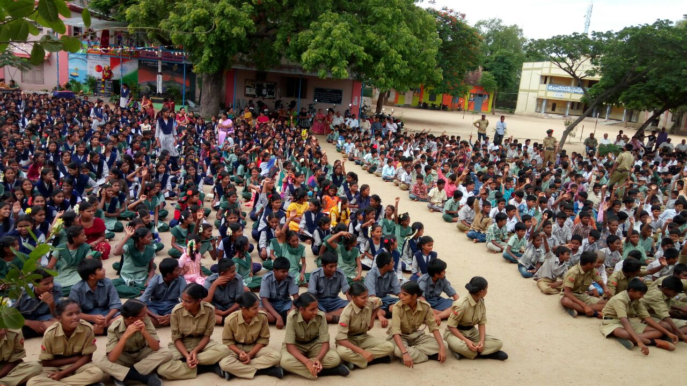
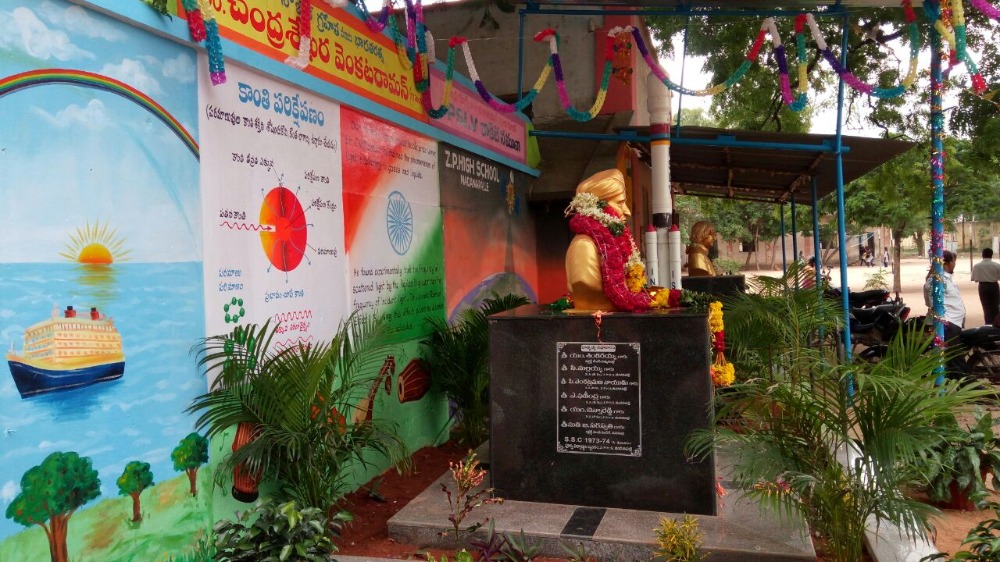
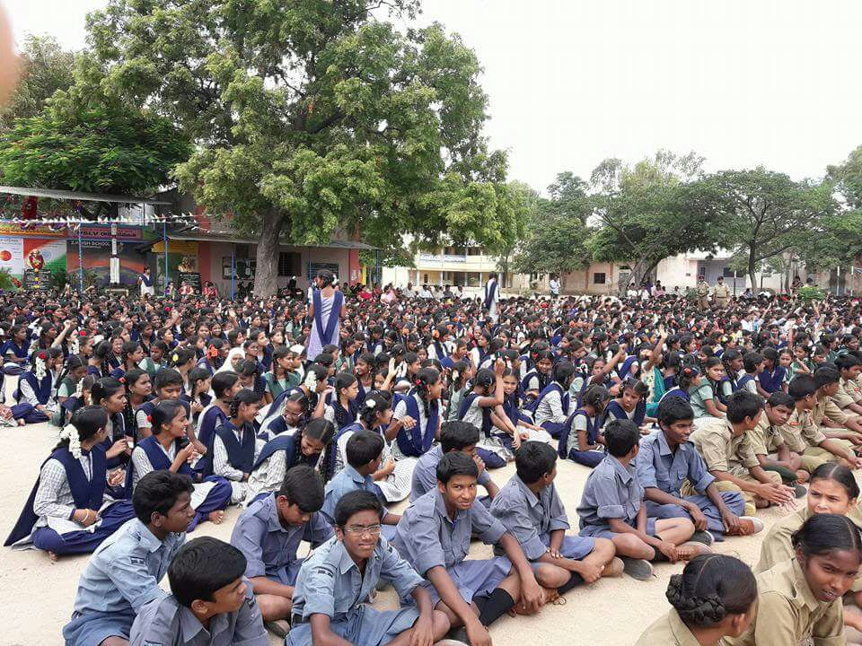
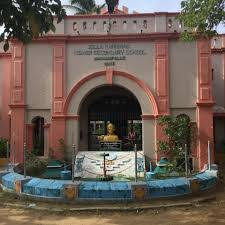
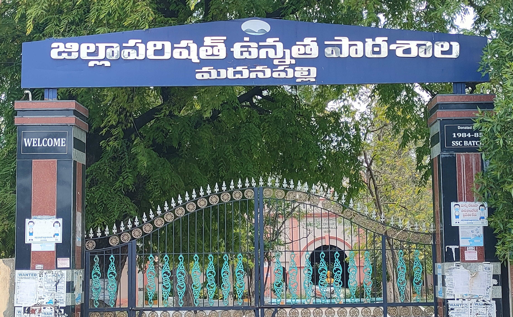

Z P High School Madanapalle
Near RTC Bus Stand Madanapalle,Chittoor(Dist),Pin:517325
ABOUT
FECILITIES
CONTACT US
SPORTS


School Name Zphs Madanapalli Secondary School (Share) Address / Location Chittoor Madanapalle Zphs, Madanapalle (M) Andhra Pradesh India 517325 (Map) Block Name Madanapalle CCE Curriculum Yes Pupil Cumulative Records Maintained Yes School Management Committee (SMC) Yes School Development Plan by SMC Yes Record Maintained as per RTE Yes Text Books Received Yes No. of Male Teachers Approximate 41 No. of Female Teachers Approximate 31 School Building Type Government Building No. of Class Rooms Approximate 45 Computer Aided Learning No Separate Room for Head Teacher/ Principal No Electricity Connection in School Yes School Building Boundary Wall Pucca Books Library Yes Playground Yes Drinking Water Type Hand-Pump Medical Check-Up Yes Disabled Friendly Ramps No Location Type Urban Medium of Instruction Telugu Founded In Year 1924 Pre-Primary Section No School Management Local Body Classes Starts from Class 6 Highest Class Offered Class 10 School Category Upper Primary with Secondary School Type Co-Educational School Building Part of Shift School? No Residential School Type Not Applicable No. of Books in Library Approximate 1340 No. of Computers Approximate 11 School Head Master R.c. Tirumala Nearby Post Offices Kothapeta Madanapalle, Madanapalle and Madanapalle Society Colony Other Places Find Schools in Chittoor, Warangal, Mahbubnagar, Guntur, Nellore, Cuddapah, Anantapur, Karimnagar, Srikakulam, Adilabad, Kurnool, Khammam, Vizianagaram, Medak and Hyderabad Pageviews 3 views in last few days Provisional Rating 4.0/5 Based on 11 ratings by visitors General Description Zphs Madanapalli Secondary School (ZMSS) located at Chittoor Madanapalle Zphs, Madanapalle Madanapalle (M) is one of the popular schools in India. The School has been rated by 11 people on iCBSE. The Zphs Madanapalli Secondary School has been viewed 183 times by the visitors on iCBSE. This School is counted among the top-rated Schools in Andhra Pradesh with an excellent academic track record. If you're looking for more details regarding examinations schedule, application forms, admission procedure, syllabus and results, kindly contact the relevant department of the school. Own this school? Claim this profile now! Source: https://www.icbse.com
Zilla Parishat High School (ZPHS) is the name of many Government Secondary Schools in India and most particularly in the states of Andhra Pradesh and Telangana. These schools are established, supervised, and funded by the Zilla Parishad (district level local authorities of states).[1] ZP High Schools provide education for students from grades 6-10 of the Secondary School Certificate.



School Name Zphs Madanapalli Secondary School (Share) Address / Location Chittoor Madanapalle Zphs, Madanapalle (M) Andhra Pradesh India 517325 (Map) Block Name Madanapalle CCE Curriculum Yes Pupil Cumulative Records Maintained Yes School Management Committee (SMC) Yes School Development Plan by SMC Yes Record Maintained as per RTE Yes Text Books Received Yes No. of Male Teachers Approximate 41 No. of Female Teachers Approximate 31 School Building Type Government Building No. of Class Rooms Approximate 45 Computer Aided Learning No Separate Room for Head Teacher/ Principal No Electricity Connection in School Yes School Building Boundary Wall Pucca Books Library Yes Playground Yes Drinking Water Type Hand-Pump Medical Check-Up Yes Disabled Friendly Ramps No Location Type Urban Medium of Instruction Telugu Founded In Year 1924 Pre-Primary Section No School Management Local Body Classes Starts from Class 6 Highest Class Offered Class 10 School Category Upper Primary with Secondary School Type Co-Educational School Building Part of Shift School? No Residential School Type Not Applicable No. of Books in Library Approximate 1340 No. of Computers Approximate 11 School Head Master R.c. Tirumala Nearby Post Offices Kothapeta Madanapalle, Madanapalle and Madanapalle Society Colony Other Places Find Schools in Chittoor, Warangal, Mahbubnagar, Guntur, Nellore, Cuddapah, Anantapur, Karimnagar, Srikakulam, Adilabad, Kurnool, Khammam, Vizianagaram, Medak and Hyderabad Pageviews 3 views in last few days Provisional Rating 4.0/5 Based on 11 ratings by visitors General Description Zphs Madanapalli Secondary School (ZMSS) located at Chittoor Madanapalle Zphs, Madanapalle Madanapalle (M) is one of the popular schools in India. The School has been rated by 11 people on iCBSE. The Zphs Madanapalli Secondary School has been viewed 183 times by the visitors on iCBSE. This School is counted among the top-rated Schools in Andhra Pradesh with an excellent academic track record. If you're looking for more details regarding examinations schedule, application forms, admission procedure, syllabus and results, kindly contact the relevant department of the school. Own this school? Claim this profile now!
Zilla Parishat High School (ZPHS) is the name of many Government Secondary Schools in India and most particularly in the states of Andhra Pradesh and Telangana. These schools are established, supervised, and funded by the Zilla Parishad (district level local authorities of states).[1] ZP High Schools provide education for students from grades 6-10 of the Secondary School Certificate.
**This web page is created by MAHESH GOPATHI**